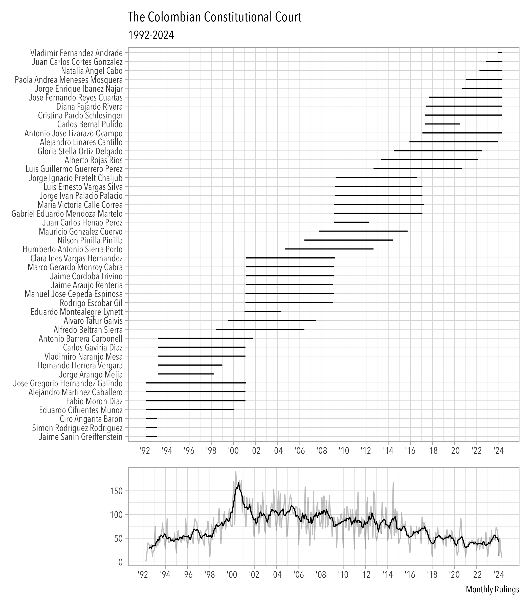

This package contains a collection of datasets about the Colombian Constitutional Court. Most of them were processed with the help of Large Language Models. It is meant to complement the datasets collected in the ccc package.
Installation
You can install the development version of cccLLM from GitHub with:
# install.packages("pak")
pak::pak("acastroaraujo/cccLLM")To cite cccLLM in publications use:
@Manual{,
title = {cccLLM: Colombian Constitutional Court Datasets},
author = {Andrés {Castro Araújo}},
year = {2025},
note = {R package version 0.1.0},
url = {https://github.com/acastroaraujo/cccLLM},
}
Convenience Functions
library(cccLLM)
summary_ruling("C-370-06")
#>
#> ── Ruling: C-370-06 ────────────────────────────────────────────────────────────
#> La Corte Constitucional analizó la constitucionalidad de la Ley 975 de 2005,
#> conocida como Ley de Justicia y Paz, la cual fue promulgada como parte del
#> proceso de desmovilización de grupos armados ilegales en Colombia. La sentencia
#> resolvió múltiples demandas que cuestionaban tanto aspectos sustantivos como
#> formales de la ley, particularmente en lo relacionado con los derechos de las
#> víctimas a la verdad, justicia y reparación, y las obligaciones del Estado
#> colombiano conforme al derecho internacional. La Corte declaró la exequibilidad
#> de la mayoría de los artículos, pero declaró inexequibles los artículos 70 y 71
#> por vicios de procedimiento en su formación. También se reiteró que la Ley no
#> constituía una ley de amnistía o indulto. El fallo generó varios salvamentos y
#> aclaraciones de voto.
#> ────────────────────────────────────────────────────────────────────────────────
#> The Constitutional Court reviewed the constitutionality of Law 975 of 2005,
#> known as the Justice and Peace Law, enacted in the context of the
#> demobilization of illegal armed groups in Colombia. The ruling addressed
#> numerous claims challenging both substantive and procedural aspects of the law,
#> especially regarding the rights of victims to truth, justice, and reparation,
#> and Colombia’s obligations under international law. The Court upheld most of
#> the law but declared Articles 70 and 71 unconstitutional due to procedural
#> flaws. It also emphasized that the law did not grant amnesty or pardons. The
#> ruling was accompanied by several dissenting and concurring opinions.
summary_ruling("SU-096-18")
#>
#> ── Ruling: SU-096-18 ───────────────────────────────────────────────────────────
#> La sentencia SU-096-18 de la Corte Constitucional de Colombia aborda el caso de
#> una mujer, Emma, quien presentó una acción de tutela contra la EPS Compensar
#> debido a la negativa de esta y sus IPS de practicarle un procedimiento de
#> interrupción voluntaria del embarazo (IVE) por malformación fetal incompatible
#> con la vida. Emma fue diagnosticada con un embarazo de un feto con
#> holoprosencefalia, una malformación del sistema nervioso central. A pesar de
#> contar con la orden médica para la IVE, enfrentó múltiples barreras
#> administrativas y negativas por parte de varias instituciones de salud. La
#> Corte Constitucional, en Sala Plena, revisó el caso y determinó que la EPS
#> vulneró los derechos fundamentales de Emma al no autorizar y practicar el
#> procedimiento de IVE de manera oportuna. La Corte confirmó la sentencia de
#> primera instancia que declaró la carencia actual de objeto por hecho superado,
#> ya que el procedimiento fue finalmente realizado. Además, la Corte exhortó al
#> Congreso a regular el derecho a la IVE y ordenó al Ministerio de Salud emitir
#> una regulación para garantizar el acceso a la IVE en los casos despenalizados.
#> ────────────────────────────────────────────────────────────────────────────────
#> The SU-096-18 ruling by the Colombian Constitutional Court addresses the case
#> of a woman, Emma, who filed a tutela action against EPS Compensar due to their
#> refusal to perform a voluntary termination of pregnancy (IVE) procedure for a
#> fetus with a life-incompatible malformation. Emma was diagnosed with a
#> pregnancy involving a fetus with holoprosencephaly, a central nervous system
#> malformation. Despite having a medical order for the IVE, she faced multiple
#> administrative barriers and refusals from various health institutions. The
#> Constitutional Court, in full chamber, reviewed the case and determined that
#> the EPS violated Emma's fundamental rights by not authorizing and performing
#> the IVE procedure in a timely manner. The Court confirmed the first-instance
#> ruling that declared the case moot due to the procedure being eventually
#> carried out. Additionally, the Court urged Congress to regulate the right to
#> IVE and ordered the Ministry of Health to issue regulations to ensure access to
#> IVE in decriminalized cases.
print_article(11)
#>
#> ── Art. 11 ─────────────────────────────────────────────────────────────────────
#> Artículo 11. El derecho a la vida es inviolable. No habrá pena de muerte.
#> ────────────────────────────────────────────────────────────────────────────────
#> Título 2: De los derechos, las garantías y los deberes
#> Capítulo 1: De los derechos fundamentales
print_article(363)
#>
#> ── Art. 363 ────────────────────────────────────────────────────────────────────
#> Artículo 363. El sistema tributario se funda en los principios de equidad,
#> eficiencia y progresividad. Las leyes tributarias no se aplicarán con
#> retroactividad.
#> ────────────────────────────────────────────────────────────────────────────────
#> Título 12: Del régimen económico y de la hacienda pública
#> Capítulo 4: De la distribución de recursos y de las competenciasDataset Examples
glimpse(rulings)
#> Rows: 28,245
#> Columns: 12
#> $ id <chr> "T-001-92", "C-004-92", "T-002-92", "C-005-92", "T-003-92",…
#> $ date <date> 1992-04-03, 1992-05-07, 1992-05-08, 1992-05-11, 1992-05-11…
#> $ type <fct> T, C, T, C, T, T, T, T, T, T, T, T, T, T, T, C, T, T, T, T,…
#> $ chamber <fct> SR, SP, SR, SP, SR, SR, SR, SR, SR, SR, SR, SR, SR, SR, SR,…
#> $ rj <fct> no, no, no, no, no, no, no, no, no, no, no, no, no, no, no,…
#> $ n_person <int> 3, 7, 3, 7, 3, 3, 3, 3, 3, 3, 3, 3, 3, 3, 3, 7, 3, 3, 3, 3,…
#> $ n_av <int> 0, 0, 0, 0, 0, 0, 0, 0, 0, 0, 0, 0, 0, 0, 0, 0, 1, 0, 0, 0,…
#> $ n_sv <int> 0, 1, 0, 2, 0, 1, 0, 0, 0, 0, 0, 0, 0, 0, 0, 0, 0, 0, 0, 0,…
#> $ n_amicus <int> 0, 3, 0, 1, 0, 0, 0, 0, 0, 0, 0, 0, 0, 0, 0, 0, 0, 0, 0, 0,…
#> $ summary_en <chr> "The ruling T-001-92 of the Colombian Constitutional Court …
#> $ summary_es <chr> "La sentencia T-001-92 de la Corte Constitucional de Colomb…
#> $ model <chr> "gpt-4o", "gpt-4o", "gpt-4o", "gpt-4o", "gpt-4o", "gpt-4o",…
glimpse(person)
#> Rows: 131,484
#> Columns: 7
#> $ id <chr> "C-001-18", "C-001-18", "C-001-18", "C-001-18", "C-001-18", "C…
#> $ name <chr> "luis guillermo guerrero perez", "carlos bernal pulido", "dian…
#> $ mp <lgl> FALSE, FALSE, TRUE, FALSE, FALSE, FALSE, FALSE, FALSE, FALSE, …
#> $ av <lgl> FALSE, FALSE, FALSE, FALSE, FALSE, FALSE, FALSE, FALSE, FALSE,…
#> $ sv <lgl> FALSE, TRUE, FALSE, FALSE, FALSE, FALSE, FALSE, FALSE, FALSE, …
#> $ interim <lgl> FALSE, FALSE, FALSE, FALSE, FALSE, FALSE, FALSE, FALSE, FALSE,…
#> $ conjuez <lgl> FALSE, FALSE, FALSE, FALSE, FALSE, FALSE, FALSE, FALSE, FALSE,…
glimpse(articles)
#> Rows: 124,021
#> Columns: 2
#> $ id <chr> "C-001-18", "C-001-18", "C-001-18", "C-001-18", "C-001-18", "C…
#> $ article <dbl> 1, 13, 17, 241, 243, 29, 158, 13, 25, 26, 28, 241, 256, 152, 9…